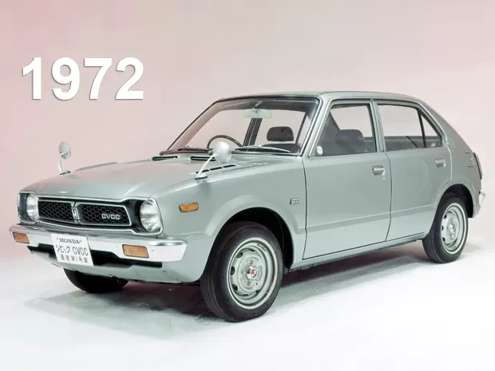

1° Geração
O Honda Civic nasceu em 1972 como um hatch compacto de 2 ou 4 portas ou perua. Trazia um pequeno motor de 4 cilindros e 1.2 litro. Foi eleito o carro do ano no Japão por três anos consecutivos.
O Honda Civic nasceu em 1972 como um hatch compacto de 2 ou 4 portas ou perua. Trazia um pequeno motor de 4 cilindros e 1.2 litro. Foi eleito o carro do ano no Japão por três anos consecutivos.